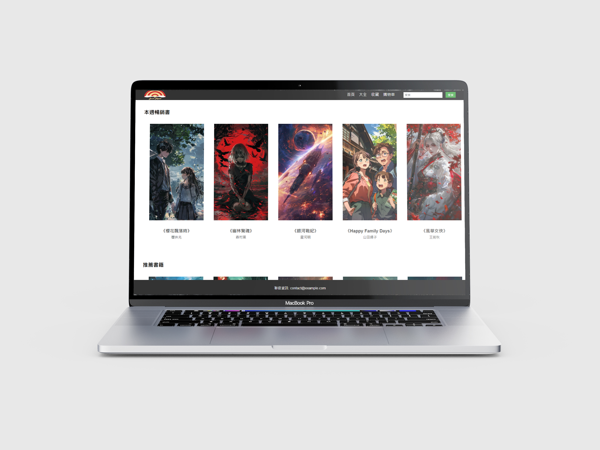

JUST READ 線上書店
這是一個模擬線上書店的前端專案，使用 HTML、CSS 和 JavaScript 製作。使用者可以瀏覽書籍分類、查看商品資訊、加入購物車、修改數量，並進行模擬結帳。我負責整體互動功能的實作，包含購物車邏輯、價格更新與前端流程設計，強調使用者操作的流暢性與功能完整度。

清流行動 水資源保護網頁
這個作品以水資源議題為主軸，設計了一個結合互動元素的推廣網站。使用者可以了解水資源的現況與保育方式，並透過報名表單參與相關活動。我負責整體程式開發，包含頁面導覽、互動動畫效果、表單處理邏輯與資料同步功能，強化網站的參與感與資訊呈現效率。